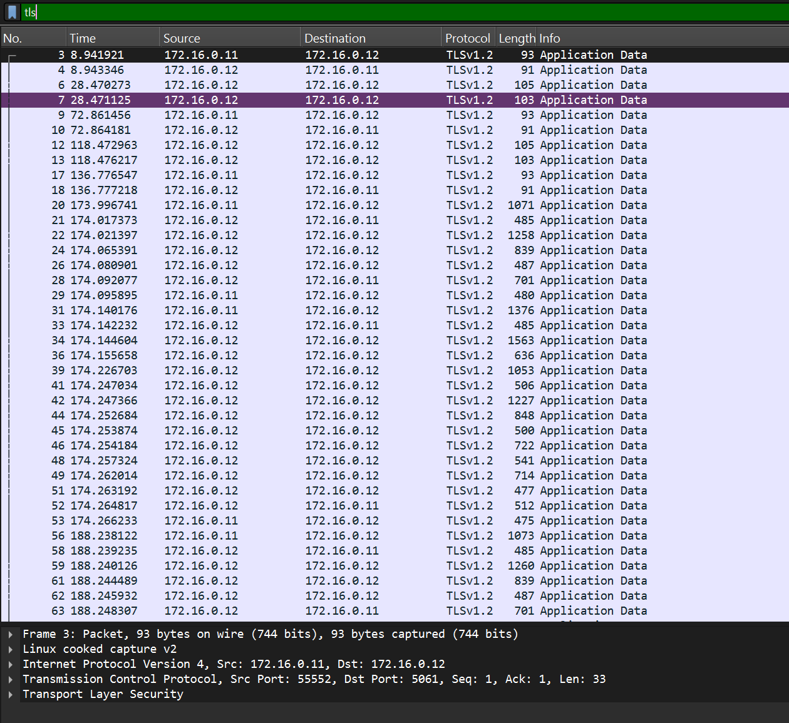

Bezpečný SIP trunk.
Cílem projektu bylo vytvoření a ověření zabezpečeného SIP trunk mezi Asterisk PBX a Kamailio pomocí TLS, certifikátů a řízení důvěryhodnosti.
01 · Kontext
Proč zabezpečovat
VoIP komunikaci?
SIP řídí navázání hovoru, ale ve své základní podobě neposkytuje dostatečnou ochranu proti odposlechu, podvržení identity ani manipulaci se signalizací.
SIP signalizace není přenášena jako čitelný text. Útočník na síti neuvidí čísla, hlavičky ani parametry hovoru.
02 · TLS
Jak TLS chrání?
Šifrování
Všechna data mezi Asterisk a Kamailio jsou šifrovaná pomocí TLS, což zabraňuje odposlechu.
Autenticita protistrany
Certifikační autorita potvrzuje, že se Asterisk připojuje ke správnému Kamailiu a naopak.Integrita přenosu
Kontrolní mechanismy TLS odhalí změnu paketů během přenosu a spojení ukončí.03 · Návrh řešení
Od klienta k proxy.
Kamailio funguje jako vstupní bod a směruje SIP signalizaci. Asterisk zajišťuje logiku ústředny, registraci a samotné zpracování hovorů.
Asterisk PBX
Zdroj SIP požadavků a koncový bod telefonní služby.
sip transport = tlsKamailio
Proxy, směrování a kontrola příchozí signalizace.
listen=tls:5061Ověřený trunk
Komunikace s integritou, autenticitou a utajením.
verify_client = yes04 · Postup práce
Instalace Asterisku
Instalace balíčku, příprava konfigurace PJSIP a vytvoření adresáře pro certifikáty.
apt install -y asterisk
echo "" > /etc/asterisk/pjsip.conf
nano /etc/asterisk/pjsip.conf
mkdir -p /etc/asterisk/certs
chown -R asterisk:asterisk /etc/asterisk/certs
Vytvoření certifikátů
Vlastní certifikační autorita vystaví certifikáty pro Asterisk a Kamailio. Obě strany se díky nim mohou vzájemně ověřit během TLS spojení.
mkdir -p /root/pki && cd /root/pki
# 1) Certifikační autorita
openssl genrsa -out ca.key 4096
openssl req -x509 -new -key ca.key -sha256 -days 825 -subj "/O=VSB/CN=VSB Private CA" \
-addext "basicConstraints=critical,CA:TRUE" \
-addext "keyUsage=critical,keyCertSign,cRLSign" \
-out ca.crt
# 2) Asterisk
openssl genrsa -out asterisk.key 2048
openssl req -new -key asterisk.key -subj "/O=VSB/CN=172.16.0.12" -out asterisk.csr
cat > asterisk.ext <<'EOF'
basicConstraints=CA:FALSE
keyUsage=digitalSignature,keyEncipherment
extendedKeyUsage=serverAuth,clientAuth
subjectAltName=IP:172.16.0.12
EOF
openssl x509 -req -in asterisk.csr -CA ca.crt -CAkey ca.key -CAcreateserial \
-days 825 -sha256 -extfile asterisk.ext -out asterisk.crt
# 3) Kamailio
openssl genrsa -out kamailio.key 2048
openssl req -new -key kamailio.key -subj "/O=VSB/CN=172.16.0.12" -out kamailio.csr
cat > kamailio.ext <<'EOF'
basicConstraints=CA:FALSE
keyUsage=digitalSignature,keyEncipherment
extendedKeyUsage=serverAuth,clientAuth
subjectAltName=IP:172.16.0.12
EOF
openssl x509 -req -in kamailio.csr -CA ca.crt -CAkey ca.key -CAcreateserial \
-days 825 -sha256 -extfile kamailio.ext -out kamailio.crt
cp ca.crt asterisk.crt asterisk.key ca.key /etc/asterisk/certs/
chown -R asterisk:asterisk /etc/asterisk/certs
chmod 640 /etc/asterisk/certs/*.key
cp ca.crt kamailio.crt kamailio.key /etc/kamailio/certs/
chown -R kamailio:kamailio /etc/kamailio/certs
chmod 640 /etc/kamailio/certs/*.key
systemctl restart asterisk kamailio
openssl x509 -in /etc/asterisk/certs/asterisk.crt -noout -text | grep -A1 -E "Basic Constraints|Extended Key|Alternative"
openssl s_client -connect 172.16.0.12:5070 \
-cert /etc/kamailio/certs/kamailio.crt \
-key /etc/kamailio/certs/kamailio.key \
-CAfile /etc/kamailio/certs/ca.crt </dev/null 2>&1 | grep -E "Verify return|alert"Instalace Kamailio
Kamailio funguje jako TLS proxy na portu 5061. Po instalaci se nastaví TLS konfigurace a hlavní směrování SIP požadavků.
apt install kamailio kamailio-tls-modules
ls -l /etc/asterisk/certs/kamailio.*
nano /etc/kamailio/tls.cfg
nano /etc/kamailio/kamailio.cfg
[server:default]
method = TLSv1.2+
verify_certificate = no
require_certificate = no
private_key = /etc/kamailio/certs/kamailio.key
certificate = /etc/kamailio/certs/kamailio.crt
ca_list = /etc/kamailio/certs/ca.crt
[client:default]
verify_certificate = yes
require_certificate = yes
method = TLSv1.2+
private_key = /etc/kamailio/certs/kamailio.key
certificate = /etc/kamailio/certs/kamailio.crt
ca_list = /etc/kamailio/certs/ca.crt
request_route {
route(REQINIT);
route(NATDETECT);
if (is_method("CANCEL")) {
dlgs_update();
if (t_check_trans()) {
route(RELAY);
}
exit;
}
if (!is_method("ACK")) {
if (t_precheck_trans()) {
t_check_trans();
exit;
}
t_check_trans();
}
route(WITHINDLG);
if (is_method("REGISTER")) {
route(REGISTRAR);
exit;
}
remove_hf("Route");
if (is_method("INVITE|SUBSCRIBE|REFER")) {
record_route();
}
if (is_method("INVITE")) {
if ($si == "172.16.0.11") {
if (!lookup("location")) {
sl_reply_error();
exit;
}
} else {
$du = "sip:172.16.0.11:5070;transport=tls";
}
setflag(FLT_ACC);
}
route(RELAY);
exit;
}PJSIP konfigurace
Transport používá TLS 1.2 a vzájemné ověření certifikátů. Endpointy 2000 a 2001 slouží jako interní telefony a Kamailio jako trunk.
[global]
type=global
user_agent=Asterisk-Secure-PBX
; ==========================================
; SYSTÉMOVÉ NASTAVENÍ ŠIFROVANÉHO PŘENOSU (TLS)
; ==========================================
[tls-transport]
type=transport
protocol=tls
bind=0.0.0.0:5070
cert_file=/etc/asterisk/certs/asterisk.crt
priv_key_file=/etc/asterisk/certs/asterisk.key
method=tlsv1_2
verify_client=yes
require_client_cert=yes
ca_list_file=/etc/asterisk/certs/ca.crt
[2001]
type=endpoint
transport=tls-transport
media_encryption=sdes
context=interni
disallow=all
allow=ulaw,alaw
auth=2001
aors=2001
direct_media=no
rtp_symmetric=yes
force_rport=yes
[2001]
type=auth
auth_type=userpass
username=2001
password=heslo
[2001]
type=aor
max_contacts=10
[2000]
type=endpoint
transport=tls-transport
media_encryption=sdes
context=interni
disallow=all
allow=ulaw,alaw
auth=2000
aors=2000
direct_media=no
rtp_symmetric=yes
force_rport=yes
[2000]
type=auth
auth_type=userpass
username=2000
password=heslo
[2000]
type=aor
max_contacts=10
[kamailio-trunk]
type=endpoint
transport=tls-transport
context=z-kamailia
disallow=all
allow=ulaw,alaw
media_encryption=no
aors=kamailio-trunk
[kamailio-trunk]
type=aor
contact=sip:172.16.0.12:5061
[kamailio-trunk]
type=identify
endpoint=kamailio-trunk
match=172.16.0.12
Směrování hovorů
Dialplan předá interní hovory do Kamailia a po návratu je doručí zaregistrovanému telefonu.
[general]
static=yes
writeprotect=no
[interni]
exten => _2XXX,1,NoOp(Posilam hovor na Kamailio pres secure trunk)
exten => _2XXX,n,Hangup()
[z-kamailia]
; Když ho kamailio vrati, asterisk ho doruči zaregistrovanemu telefonu
exten => _2XXX,1,NoOp(Hovor se vratil z Kamailia, zvonim na telefon)
exten => _2XXX,n,Dial(PJSIP/sip:${EXTEN}@kamailio-trunk)
exten => _2XXX,n,Hangup()
Ověření spojení
Výstup z Asterisku potvrzuje navázání TLS spojení, průchod signalizace přes Kamailio a úspěšné spojení hovoru.
[Nov 7 10:45:12] NOTICE[4312]: res_pjsip/pjsip_distributor.c:688 log_failed_request: Incoming SIP Request 'INVITE' from endpoint '2000' (identity: "2000" <sip:2000@172.16.0.12>) for 'sip:2001@172.16.0.12'
-- Executing [2001@interni:1] Dial("PJSIP/2000-00000001", "PJSIP/2001") in new stack
-- Called PJSIP/2001
<--- Transmitting SIP request (1250 bytes) to TLS:172.16.0.12:5061 --->
INVITE sip:2001@172.16.0.11:60314;transport=tls SIP/2.0
Via: SIP/2.0/TLS 172.16.0.12:5070;rport;branch=z9hG4bKPj88a4...
From: "2000" <sip:2000@172.16.0.12>;tag=7a3b...
To: <sip:2001@172.16.0.12>
Contact: <sip:172.16.0.12:5070;transport=TLS>
...
<--- Received SIP response (430 bytes) from TLS:172.16.0.12:5061 --->
SIP/2.0 183 Session Progress
Via: SIP/2.0/TLS 172.16.0.12:5070;rport;branch=z9hG4bKPj88a4...
From: "2000" <sip:2000@172.16.0.12>;tag=7a3b...
To: <sip:2001@172.16.0.12>;tag=9c2f...
RSeq: 1
...
-- PJSIP/2001-00000002 is ringing
<--- Received SIP response (350 bytes) from TLS:172.16.0.12:5061 --->
SIP/2.0 200 OK
...
-- PJSIP/2001-00000002 answered
-- Channel PJSIP/2000-00000001 joined 'conference' or bridged to PJSIP/2001-00000002
[Nov 7 10:45:25] NOTICE[4312]: res_pjsip/pjsip_pubsub.c: CLIENT hungup
-- Channel PJSIP/2001-00000002 left bridge
-- Executing [2001@interni:2] Hangup("PJSIP/2000-00000001", "") in new stack
== Spawn extension (interni, 2001, 2) exited non-zero on 'PJSIP/2000-00000001'
Praktické ukázky
Ukázky konfigurace softwarových telefonů, TLS spojení a zachycené SIP komunikace z testovacího prostředí.



05 · Závěr
Projektem se podařilo vytvořit a ověřit funkční SIP trunk mezi Asteriskem a Kamailiem, který zabezpečuje SIP signalizaci pomocí TLS.
Byla vytvořena vlastní certifikační autorita a certifikáty pro obě strany. Asterisk i Kamailio se díky nim vzájemně ověřují, takže lze potvrdit autenticitu protistrany a integritu přenášených zpráv.
Správnost konfigurace byla ověřena navázáním TLS spojení, kontrolou certifikátů, zachycením šifrovaného provozu a uskutečněním testovacího hovoru mezi telefony 2000 a 2001. Výsledkem je trunk, přes který lze bezpečně směrovat SIP signalizaci mezi ústřednou a proxy serverem.